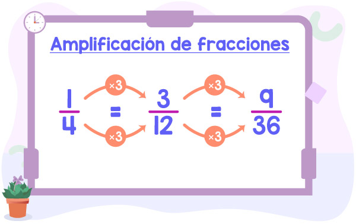

Fracciones equivalentes
¿Qué son?
Fracciones equivalentes son aquellas fracciones que representan la misma cantidad aunque el numerador y el denominador sean diferentes.
¿Cómo sabemos si dos fracciones son equivalentes?
Lo son si los productos del numerador de una y el denominador de la otra son iguales, es decir, productos cruzados.

¿Cómo encontramos fracciones equivalentes?
Hay dos formas:
AMPLIFICANDO

SIMPLIFICANDO